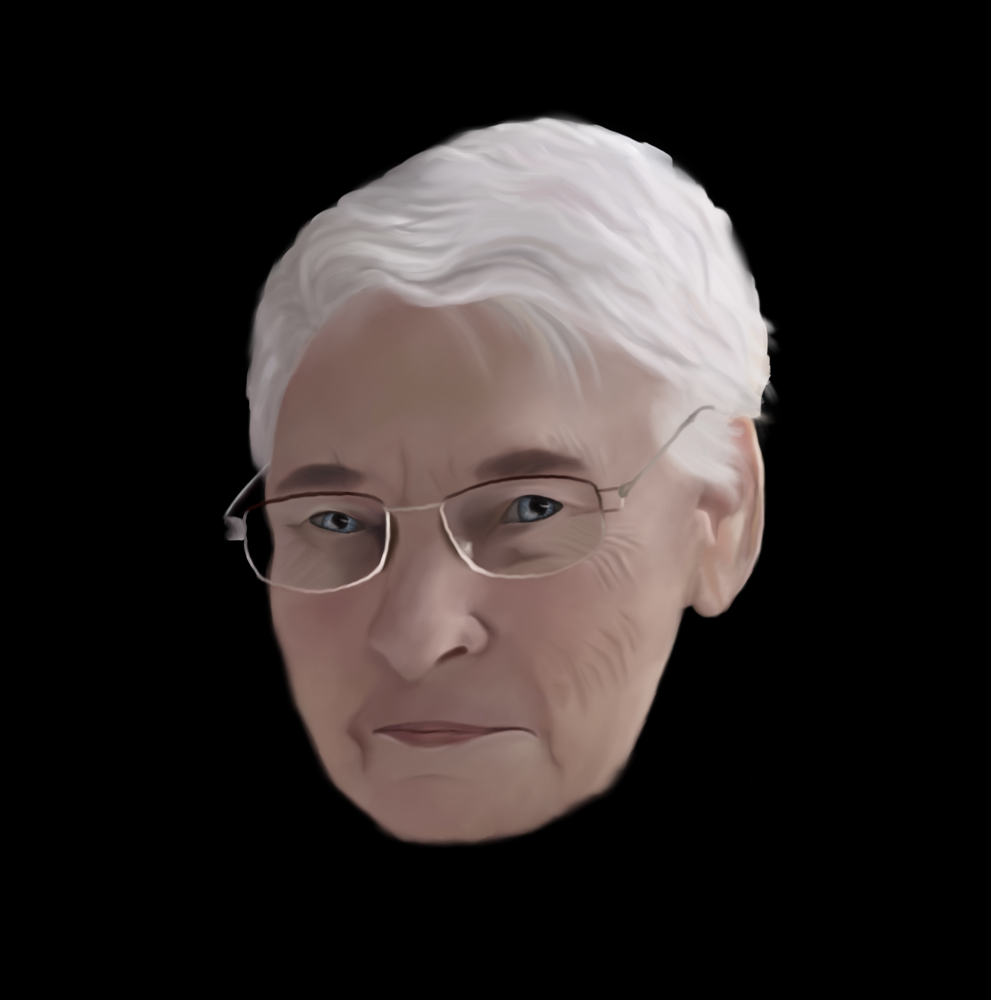
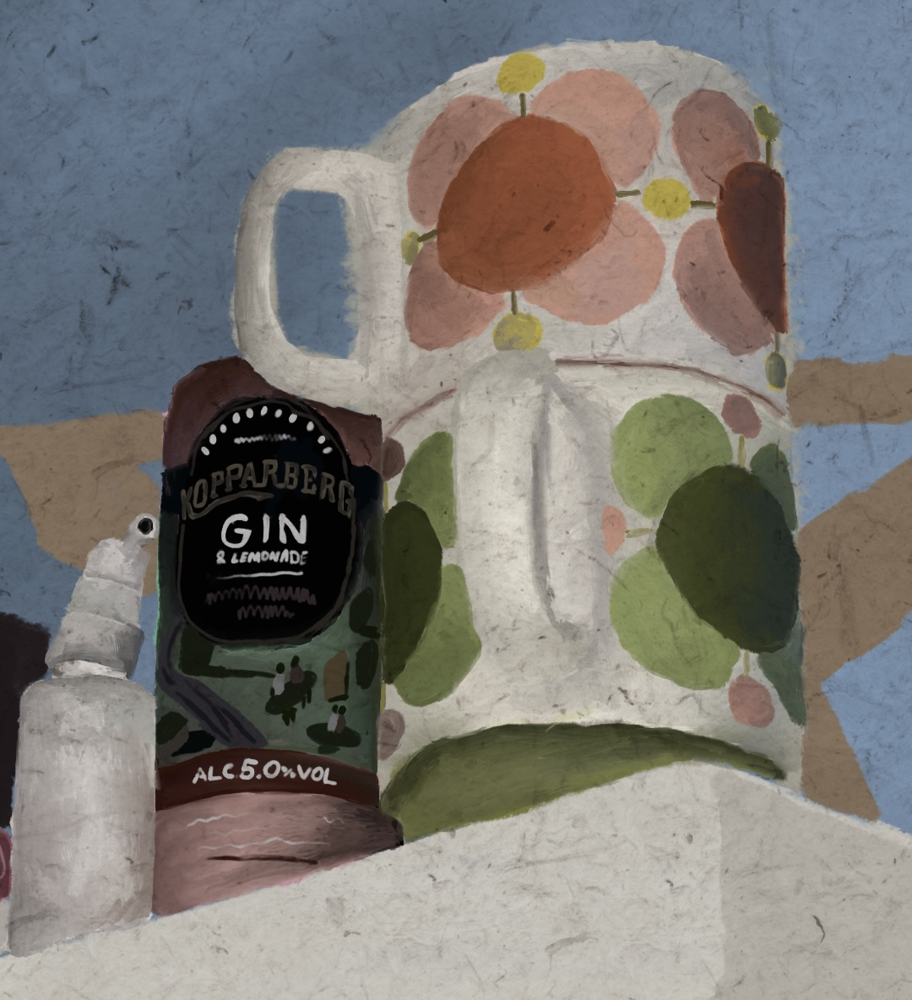
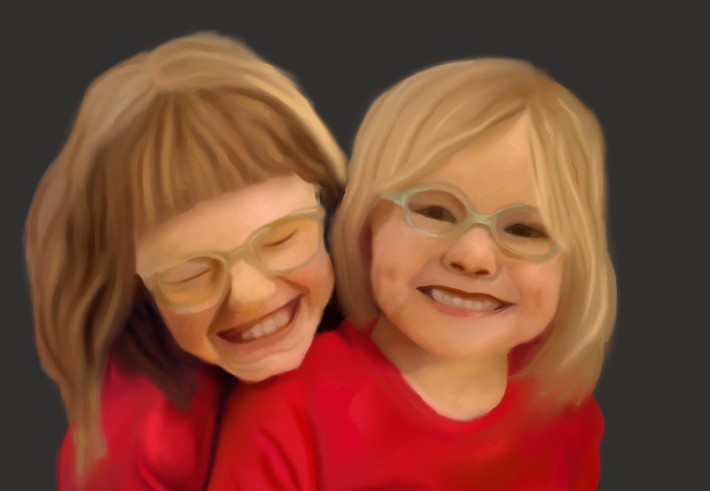
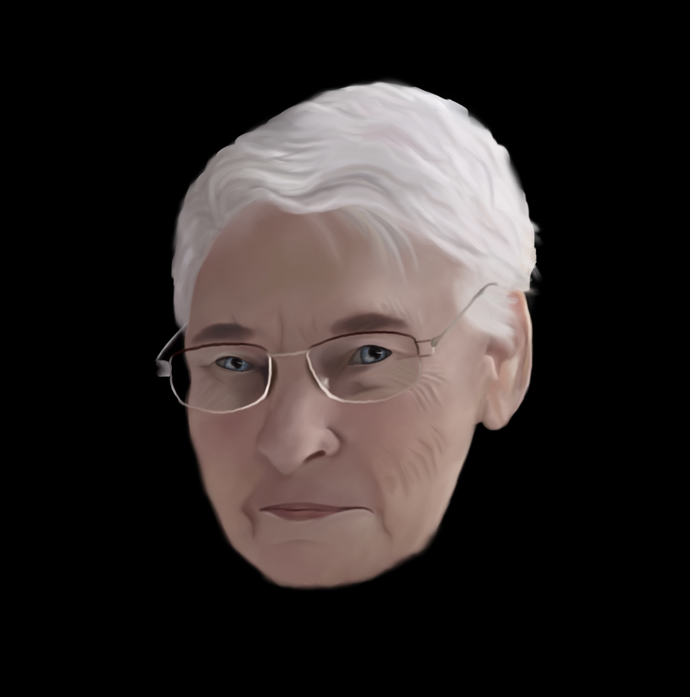
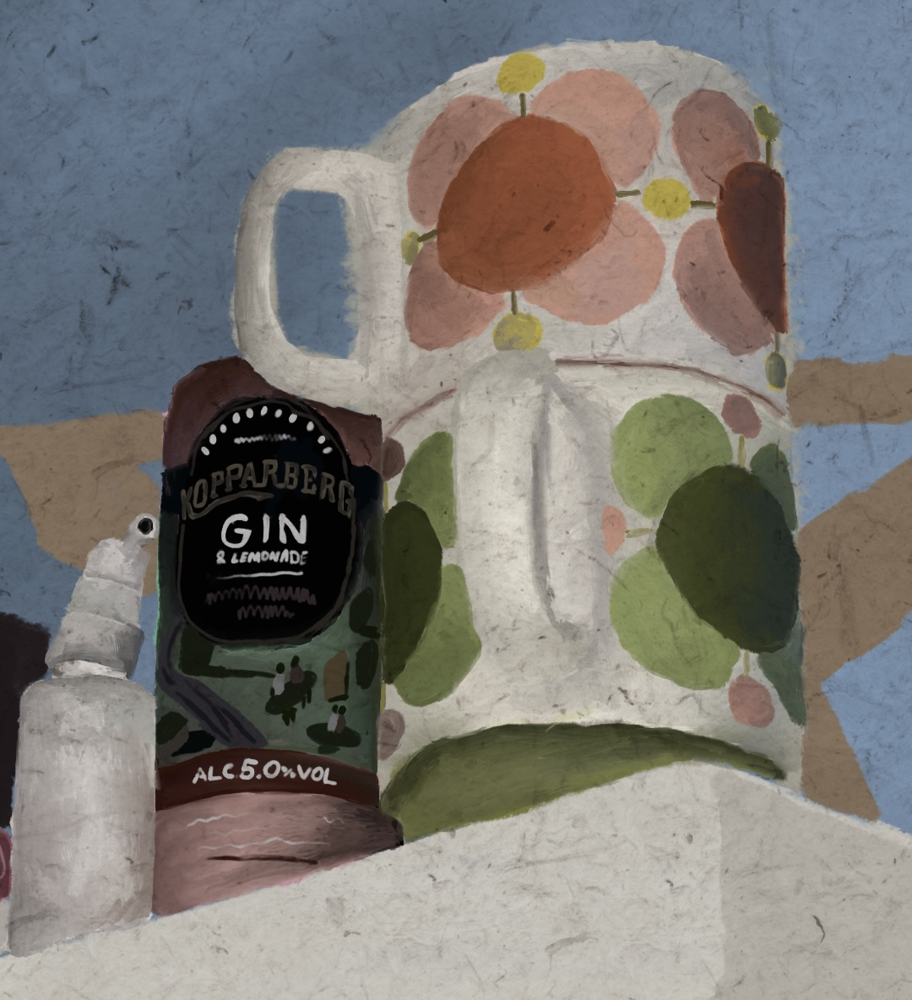
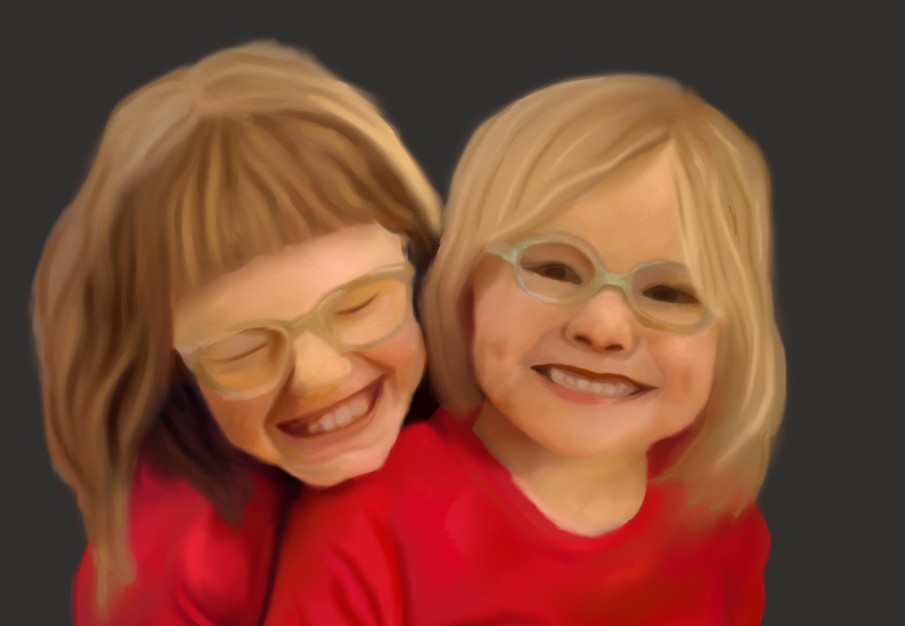

My Story
Hello! My name is Lauren Jones. I enjoy drawing mostly digitally, using my iPad to create art. I studied Art in school, but I really didn't enjoy it, and didn't do very well in my exam. I didn't let that stop me from pursuing my interests, and taught myself how to draw digitally in 2020. Since I picked up drawing again, I decided to pursue a degree in a related field so I could use my skills and passions in work some day. A little bit about me; I love animals, so much so in fact I have completed two PLC courses in Animal Science. I wanted to be a vet for a long time, but science is not my strong suit. I have one dog named Twix, and he is the light of my life. I also enjoy listening to music in my spare time, and watching movies and TV shows. I am a big horror fan; I love watching horror movies with people that get scared easily. I am currently studying Graphic Design in Dun Laoghaire Institute of Art & Design. I'm in my first year, and I hope that by the end of my final year that I will have picked up enough skills to earn my place in the field of work.
 




